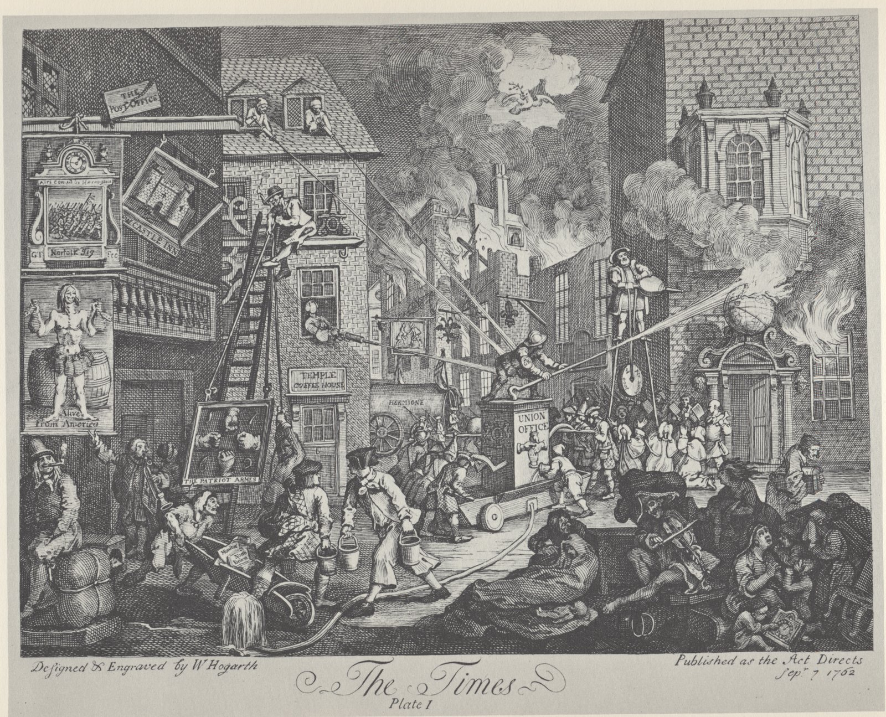

The Headline and the Shop Floor

Télécharger la séquence
Anglais · Terminale bac pro · toutes filières · LVA, B1 vers B1+ (Help : A2+ vers B1 ; Going further : vers B2)
Format retenu : mise en situation professionnelle, scénario actionnel. Ce format convient au BO, qui préconise l’approche actionnelle et une pédagogie de la mise en situation active, avec des documents authentiques qui créent un effet de réel.
Six lessons de 55 minutes, minutées sur 52 minutes. Version Terminale, bac pro, de la question déjà ouverte en Première dans Can We Trust What We See?. Ici, l’élève n’est plus seulement un lecteur d’images : il est en PFMP, et une information circule sur l’entreprise.
Question directrice : What do you do when a story about your workplace is circulating?
Présentation (version prof)
Public : Terminale baccalauréat professionnel, lycée professionnel (ministère de l’Éducation nationale). Cette séquence n’est pas écrite pour le bac pro agricole.
Programme : BO spécial n° 5 du 11 avril 2019. Contextes : vie quotidienne, sociale et citoyenne (médias, réseaux, habitudes de consommation) ; vie professionnelle (codes de communication, rendre compte, fournir une explication adaptée, protéger le nom de l’entreprise et le client).
Les cinq activités langagières sont travaillées dans la séquence, y compris l’interaction orale (échange avec un responsable ou un client).
Chaque lesson dure 55 minutes, minutée sur 52 minutes, avec un point d’arrêt et une sortie de secours de 8 minutes. Une seule progression pour toute la classe : les encadrés Help aident les élèves encore vers B1 ; les encadrés Going further proposent une tâche plus longue, vers B2. La différenciation se fait dans la lesson, pas par des parcours séparés.
Ordre habituel d’une lesson : rappel et flashcards ; question du jour ; document (texte, image ou audio) lu avec la spirale de Gorse ; Expanding your vocabulary ; Étude de la langue (un point utile pour la tâche du jour) ; exercices, du repérage à la production, avec corrigés en Version prof ; tâche d’oral, y compris l’interaction, pour que chacun parle au moins une fois ; trace écrite ; homework.
En l’absence d’enregistrement audio, lisez le transcript à voix haute trois fois, avec une minute entre les lectures, comme à l’épreuve.
Scénario de la séquence. Vous êtes en PFMP. Un message, une photo recadrée ou un avis trop violent circule au sujet de votre lieu de travail. Votre tâche : vérifier, ne pas partager trop vite, rendre compte au responsable, puis expliquer clairement, au besoin, à un client.
Lessons at a glance
| Lesson | Titre | Question du jour |
|---|---|---|
| 1 | A Picture of the News | Who is speaking, and who is being pushed, in this picture of the news? |
| 2 | A Message on the Floor | What do you do in the first five minutes? |
| 3 | Check Before You Share | What three checks can you actually make? |
| 4 | Write to the Manager | How do you report a story without spreading it? |
| 5 | On the Shop Floor | Can you brief the team, then answer a customer? |
| 6 | CCF blanc | Entraînement à l’épreuve, Version prof |
Spirale de Gorse
Méthode conçue par Madame Carole Paoli Pompougnac. Le nom rend hommage à sa grand-mère par alliance, Madame Armandine Gorse, avec un S. On gravit un texte, un audio ou une image comme une pente : chaque tour est une prise plus haute. On part de ce qui saute aux yeux, puis l'attention se resserre, jusqu'à la pointe, le sommet où l'essentiel se laisse voir. Quatre tours, puis la pointe. Dans chaque lesson, appliquez la spirale au document principal (texte, image ou audio). Les réponses détaillées restent en Version prof.

Je remarque (I notice)
Ce qui saute aux yeux, la première impression.
I notice… / This is about…
Je repère (I spot)
Un détail, un passage, un élément plus net.
I spot… / The key word is…
Je comprends (I understand)
Ce que ces éléments permettent de comprendre.
This shows that… / They have in common…
J'anticipe (I anticipate)
La visée du texte, ce qu'il faut en faire.
The text wants me to… / I anticipate…
Je trouve le sens (I find the meaning)
La pointe : l'essentiel que l'on peut défendre, et sa limite.
The point is… / But I must not…
Exemple travaillé, sur The Times, Plate I de Hogarth (version prof)
| Tour | Question du professeur | Réponse attendue | Ce qui se resserre |
|---|---|---|---|
| 1. Je remarque | Qu’est-ce qui saute aux yeux ? | Une rue en désordre, un incendie, des affiches, des gens qui tirent et qui crient. | Ce n’est pas une salle de rédaction calme : l’actualité est un chantier, presque un incendie. |
| 2. Je repère | Où sont les textes, les affiches, les « news » ? | Des papiers, un signe « The Times », des morceaux d’affiche, un monde qui se dispute autour des nouvelles. | L’information n’est pas neutre : elle est affichée, tirée, contestée. |
| 3. Je comprends | Que permet de comprendre ce désordre ? | Publier une nouvelle peut enflammer un lieu. La gravure montre le bruit de l’actualité, pas seulement son contenu. | On passe de « une image ancienne » à « ce que fait une nouvelle quand elle circule ». |
| 4. J’anticipe | Que ferons-nous de cette gravure en Terminale, en PFMP ? | S’en servir pour ralentir : avant de partager, regarder qui parle, et à qui cela nuit. | On anticipe le hors-sujet : une leçon d’histoire britannique sans revenir à la tâche professionnelle. |
| 5. Je trouve le sens | L’essentiel, et sa limite ? | Une nouvelle peut blesser un lieu de travail aussi sûrement qu’un incendie blesse une rue. Limite : tout n’est pas faux ; encore faut-il vérifier avant de partager. | Une phrase utile le jour où un avis ou une photo circule. |
Lesson 1 · A Picture of the News
Activités : CE, PE, PO, interaction.
By the end of this lesson, I can: describe an engraving about the news, and say who seems to benefit from a loud story.
Question du jour : Who is speaking, and who is being pushed, in this picture of the news?
Spirale de Gorse
Dans chaque lesson, appliquez la spirale au document principal (texte, image ou audio). Les réponses détaillées restent en Version prof.
Je remarque (I notice)
Ce qui saute aux yeux, la première impression.
I notice… / This is about…
Je repère (I spot)
Un détail, un passage, un élément plus net.
I spot… / The key word is…
Je comprends (I understand)
Ce que ces éléments permettent de comprendre.
This shows that… / They have in common…
J'anticipe (I anticipate)
La visée du texte, ce qu'il faut en faire.
The text wants me to… / I anticipate…
Je trouve le sens (I find the meaning)
La pointe : l'essentiel que l'on peut défendre, et sa limite.
The point is… / But I must not…
Minutage (52 minutes)
| Minutes | Étape | Activité |
|---|---|---|
| 0 à 6 | Diagnostic, non noté : Have you ever seen a story about a shop, a restaurant or a workplace that was unfair? Three written lines. | PE |
| 6 à 20 | Spirale de Gorse sur la gravure de Hogarth. | CE, PO |
| 20 à 28 | Expanding your vocabulary. | CE |
| 28 à 36 | Étude de la langue : it seems, apparently, I am not sure, according to. | PE |
| 36 à 46 | Interaction : Is a loud story always a true story? Une minute chacun, une question en retour. | PO, interaction |
| 46 à 50 | Trace écrite. | PE |
| 50 à 52 | Homework. |
Point d’arrêt (minute 46). Chaque élève a utilisé au moins une formule de prudence (it seems, apparently).
Help : utilisez I can see, it seems, I am not sure. Going further : comparez deux détails de la gravure et dites ce qui a pu être exagéré, en trois phrases.
Sortie de secours (8 minutes). Trois phrases dictées : I notice a street on fire. The news is everywhere. I should check before I share.
Expanding your vocabulary
| Word | Meaning | Example |
|---|---|---|
| a headline | the title of a news story | The headline was angry, and short. |
| to circulate | to go from person to person | The photo circulated in the staff group. |
| to spread | to make a story go further | Do not spread a story you have not checked. |
| a rumour | a story that is not proved | It may be a rumour. |
| to check the source | to ask where a story comes from | First, check the source. |
| apparently | it seems, but I am not sure | Apparently the shop closed early. |
| fair / unfair | just / not just | The comment was unfair to the team. |
Étude de la langue
Pour ne pas présenter un doute comme un fait : It seems that… Apparently… According to this message… I am not sure yet.
Exercice 1. Réécrivez sans présenter le fait comme sûr : The shop is dirty. The manager shouted. The photo is recent.
Corrigé (version prof). It seems that the shop is dirty. Apparently the manager shouted. I am not sure the photo is recent. / According to this message, the photo is recent, but I have not checked.
Homework
Six mots du tableau, quatre phrases avec it seems ou apparently. Récapitulez la lesson.
Lesson 2 · A Message on the Floor
Activités : CO, CE, PE, PO, interaction.
By the end of this lesson, I can: understand a short spoken message about a circulating story, and say what I do first.
Question du jour : What do you do in the first five minutes?
Spirale de Gorse
Dans chaque lesson, appliquez la spirale au document principal (texte, image ou audio). Les réponses détaillées restent en Version prof.
Je remarque (I notice)
Ce qui saute aux yeux, la première impression.
I notice… / This is about…
Je repère (I spot)
Un détail, un passage, un élément plus net.
I spot… / The key word is…
Je comprends (I understand)
Ce que ces éléments permettent de comprendre.
This shows that… / They have in common…
J'anticipe (I anticipate)
La visée du texte, ce qu'il faut en faire.
The text wants me to… / I anticipate…
Je trouve le sens (I find the meaning)
La pointe : l'essentiel que l'on peut défendre, et sa limite.
The point is… / But I must not…
Minutage (52 minutes)
| Minutes | Étape | Activité |
|---|---|---|
| 0 à 5 | Rappel. | PO |
| 5 à 20 | Écoute trois fois. Compte rendu en français. | CO |
| 20 à 32 | Lecture du message écrit (capture d’écran fictive, texte d’entraînement). Spirale de Gorse. | CE |
| 32 à 40 | Étude de la langue : first steps with imperatives (Stop. Do not share. Tell the manager.). | PE |
| 40 à 48 | Interaction : You have five minutes. What do you do first, second, third? | PO, interaction |
| 48 à 52 | Trace écrite et homework. | PE |
Point d’arrêt (minute 48). Trois actions orales, dans l’ordre.
Sortie de secours (8 minutes). Tableau : Stop / Check / Tell. Chaque élève donne un exemple.
Transcript (version prof)
Hi, it’s Jordan, from the afternoon shift. A photo is circulating in a local group. It shows our counter, but the floor looks filthy, and the light is very yellow. I was here this morning: we had just started mopping, and the photo is cropped, you cannot see the wet-floor sign. A customer has already asked me if we are closing. I have not shared the photo. I told the manager, and I wrote down the time. Can you check the cameras, and can we post one honest picture of the floor when it is dry? I do not want to fight online. I just do not want a cropped photo to become the story of this place.
Consigne : « Rendez compte en français : qui parle, que circule-t-il, que sait la personne, qu’a-t-elle déjà fait, que demande-t-elle. »
Corrigé (version prof). Jordan, équipe de l’après-midi. Une photo du comptoir circule, sol d’aspect sale, lumière jaune. Ce matin, le lavage commençait ; la photo est recadrée, le panneau n’apparaît pas. Un client a déjà demandé si le lieu ferme. Jordan n’a pas partagé, a prévenu le responsable, a noté l’heure. Il demande une vérification des caméras et une photo honnête du sol une fois sec. Il ne veut pas se battre en ligne ; il ne veut pas qu’une photo recadrée devienne l’histoire du lieu.
Homework
Écrivez vos trois premières actions, en anglais, en six lignes.
Lesson 3 · Check Before You Share
Activités : CE, PE, PO, interaction.
By the end of this lesson, I can: apply three checks (source, date, what has been changed) to a short document.
Question du jour : What three checks can you actually make?
Spirale de Gorse
Dans chaque lesson, appliquez la spirale au document principal (texte, image ou audio). Les réponses détaillées restent en Version prof.
Je remarque (I notice)
Ce qui saute aux yeux, la première impression.
I notice… / This is about…
Je repère (I spot)
Un détail, un passage, un élément plus net.
I spot… / The key word is…
Je comprends (I understand)
Ce que ces éléments permettent de comprendre.
This shows that… / They have in common…
J'anticipe (I anticipate)
La visée du texte, ce qu'il faut en faire.
The text wants me to… / I anticipate…
Je trouve le sens (I find the meaning)
La pointe : l'essentiel que l'on peut défendre, et sa limite.
The point is… / But I must not…
Minutage (52 minutes)
| Minutes | Étape | Activité |
|---|---|---|
| 0 à 6 | Rappel des trois actions. | PO |
| 6 à 22 | Lecture d’une mini-méthode (texte d’entraînement). Spirale de Gorse. Exercices. | CE, PE |
| 22 à 30 | Étude de la langue : questions de vérification (Who posted this? When? What is missing?). | PE |
| 30 à 44 | Atelier : trois documents courts (avis, photo décrite, message). Pour chacun, trois checks. | CE, PE, interaction |
| 44 à 50 | Mise en commun. | PO |
| 50 à 52 | Homework. |
Point d’arrêt (minute 44). Trois checks écrits sur au moins un document.
Help : trois questions seulement (source, date, what has been changed). Going further : rédigez un message d’équipe de six lignes, avec une formule de prudence.
Sortie de secours (8 minutes). Les trois checks sont dictés, puis appliqués à un seul avis trop violent.
Texte d’entraînement
Before you share, make three checks. One: who posted this, and can you find the same story somewhere reliable? Two: what is the date, and is the photo from today or from another year? Three: what has been changed, cropped, or left out? A cropped photo can be true in one corner and unfair as a whole. If you are in PFMP, your job is not to win an argument online. Your job is to protect the customer, and the name of the place, by slowing down.
Exercice 2. Reliez chaque check à une question. Corrigé (version prof) : source, who posted this ; date, when was it taken or written ; changement, what has been cropped or left out.
Homework
Appliquez les trois checks à un exemple de la lesson 2, par écrit, 80 mots au plus.
Lesson 4 · Write to the Manager
Activités : PE, CE, PO.
By the end of this lesson, I can: write a short professional report to a manager, without spreading the story.
Question du jour : How do you report a story without spreading it?
Spirale de Gorse
Dans chaque lesson, appliquez la spirale au document principal (texte, image ou audio). Les réponses détaillées restent en Version prof.
Je remarque (I notice)
Ce qui saute aux yeux, la première impression.
I notice… / This is about…
Je repère (I spot)
Un détail, un passage, un élément plus net.
I spot… / The key word is…
Je comprends (I understand)
Ce que ces éléments permettent de comprendre.
This shows that… / They have in common…
J'anticipe (I anticipate)
La visée du texte, ce qu'il faut en faire.
The text wants me to… / I anticipate…
Je trouve le sens (I find the meaning)
La pointe : l'essentiel que l'on peut défendre, et sa limite.
The point is… / But I must not…
Minutage (52 minutes)
| Minutes | Étape | Activité |
|---|---|---|
| 0 à 8 | Lecture d’un courriel modèle. | CE |
| 8 à 18 | Étude de la langue : I am writing to inform you ; I have not shared ; I suggest. | PE |
| 18 à 40 | Rédaction (100 mots au moins), relecture en binôme (sans corriger le fond à la place de l’autre). | PE |
| 40 à 48 | Deux phrases orales : the fact, the request. | PO |
| 48 à 52 | Homework. |
Point d’arrêt (minute 40). Le courriel est rédigé.
Sortie de secours (8 minutes). Compléter un courriel à trous.
Courriel modèle
Subject: Photo circulating, 12 May Hello, I am writing to inform you that a cropped photo of our counter is circulating in a local group. I have not shared it. This morning we were mopping, and the wet-floor sign does not appear in the picture. A customer has already asked if we are closing. I suggest we check the time of the photo and, if you agree, post one honest picture when the floor is dry. Thank you. Jordan
Homework
Relisez votre courriel à voix haute. Préparez la lesson 5 : vous brieferez l’équipe, puis vous répondrez à un client.
Lesson 5 · On the Shop Floor
Activités : PO, interaction, PE.
By the end of this lesson, I can: brief the team in two minutes, then answer a customer without spreading the rumour.
Question du jour : Can you brief the team, then answer a customer?
Mise en situation. Le professeur joue d’abord le responsable, puis un client inquiet. Les élèves passent en petits groupes : un briefing à l’équipe (continu), puis un échange avec le client (interaction). Pas de lecture d’un texte rédigé.
Spirale de Gorse
Dans chaque lesson, appliquez la spirale au document principal (texte, image ou audio). Les réponses détaillées restent en Version prof.
Je remarque (I notice)
Ce qui saute aux yeux, la première impression.
I notice… / This is about…
Je repère (I spot)
Un détail, un passage, un élément plus net.
I spot… / The key word is…
Je comprends (I understand)
Ce que ces éléments permettent de comprendre.
This shows that… / They have in common…
J'anticipe (I anticipate)
La visée du texte, ce qu'il faut en faire.
The text wants me to… / I anticipate…
Je trouve le sens (I find the meaning)
La pointe : l'essentiel que l'on peut défendre, et sa limite.
The point is… / But I must not…
Minutage (52 minutes)
| Minutes | Étape | Activité |
|---|---|---|
| 0 à 6 | Tirage des rôles, mots-clés seulement. | |
| 6 à 46 | Passages : briefing (environ 2 minutes) + client (environ 3 minutes). | PO, interaction |
| 46 à 50 | Autoévaluation en une phrase. | PE |
| 50 à 52 | Homework : relire pour le blanc. |
Point d’arrêt. Les élèves non entendus passent en début de lesson 6.
Help : le briefing en six phrases, puis une question du client. Going further : répondez à un client qui a déjà partagé la photo, sans l’accuser.
Sortie de secours (8 minutes). Briefing collectif en six phrases, puis une seule question client posée à la classe.
Questions client possibles : Are you closing? Is the floor really dirty? Why did you not answer online? Can I see the place now?
Corrigé (version prof). Ton calme, pas de dénigrement, pas de détail inutile. On peut proposer de montrer le lieu, ou de prendre les coordonnées du responsable. On ne reprend pas la photo pour la commenter en public.
Lesson 6 · Évaluation blanche au format du CCF et de l’épreuve ponctuelle (version prof)
Rappel du format officiel (arrêté du 17 juin 2020, annexe V ; grilles : note de service du 24 novembre 2021, BO n° 47 du 16 décembre 2021) :
- Situation A, écrite, 1 heure : compréhension de l’oral (document de 1 min 30 au plus, entendu trois fois, une minute entre les écoutes, compte rendu en français) ; compréhension de l’écrit (document authentique inconnu de 15 lignes de 70 caractères au plus, compte rendu en français) ; expression écrite (deux sujets au choix, l’un sur la vie quotidienne, l’autre sur la vie professionnelle, 100 à 120 mots au moins).
- Situation B, orale, 10 minutes : expression orale en continu, 5 minutes au plus, sur un travail, un projet, un produit, un service ou une expérience professionnelle, sans lecture ; notes et une image autorisées ; puis interaction, 5 minutes au plus.
- Élèves des établissements publics ou privés sous contrat et apprentis des CFA habilités : CCF. Autres candidats : épreuve ponctuelle, mêmes activités, une partie écrite d’une heure et une partie orale de dix minutes, au dernier trimestre. Les deux temps sont indépendants.
Chaque activité langagière est notée sur 20, puis compte pour un cinquième de la note finale. Niveau attendu : B1+ en LVA, A2+ en LVB.
Ce sujet sert d’entraînement blanc en Terminale. Version prof seulement, sauf la rubrique « L’élève ne peut pas venir en classe ou est hospitalisé ».
Situation A (52 minutes)
Transcript CO (version prof) :
This is the manager. A short video is circulating about our shop. The comments are angry, and one of them uses a photo from last year, when we were doing building work. Please do not answer in the group, and do not share the video. If a customer asks you, say that we are checking the facts, and that they can speak to me. Write down the time of any question. I will post one clear message this evening, when I have checked the date of the photo. Thank you for slowing down. That is also part of the job.
Corrigé CO (version prof). La responsable parle d’une vidéo qui circule, commentaires virulents, une photo de l’an dernier (travaux). Consigne : ne pas répondre dans le groupe, ne pas partager. Au client : nous vérifions, on peut parler à la responsable. Noter l’heure des questions. Un message clair sera publié le soir, après vérification de la date. Ralentir fait partie du travail.
Texte CE (texte d’entraînement) :
A story that circulates about your workplace is not only a private message. It can reach a customer before it reaches the manager. In this sequence we have used a 1762 engraving, a cropped photo of a counter, and a short professional email. The method is slow on purpose: check the source, check the date, check what has been changed, then report, then speak calmly. Your job in PFMP is not to win an argument online. Your job is to be fair to the team, and to the customer.
Questions : Quel risque le texte souligne-t-il ? Quels documents la séquence a-t-elle croisés ? Quelle méthode est rappelée ? Quelle est la tâche de l’élève en PFMP ?
Corrigé CE (version prof). Une histoire peut atteindre le client avant le responsable. Documents : gravure de 1762, photo recadrée, courriel. Méthode lente : source, date, modification, puis rapport, puis parole calme. En PFMP, on ne cherche pas à gagner une dispute en ligne : on reste juste avec l’équipe et le client.
Expression écrite. Sujet 1, vie professionnelle : Write to your manager about a circulating photo (100 to 120 words or more): what you have seen, what you have not done, what you suggest. Sujet 2, vie quotidienne : Write five rules for a friend who shares stories every day, and give one example from the sequence.
Situation B
Présentez, en cinq minutes, ce que vous faites quand une histoire circule sur votre lieu de PFMP : trois checks, un exemple, une phrase au client. Une image de la séquence est autorisée. Puis répondez aux questions.
Questions : Why not answer online at once? What did Hogarth’s picture show you? What do you say if your manager is not there?
Grille nationale bac pro LVA (BO n° 47 du 16 décembre 2021, annexe 4), version prof
Chaque activité langagière est notée sur 20, puis ramenée pour un cinquième de la note finale. Repères de classe, alignés sur le B1+ visé en LVA (A2+ en LVB) :
| Activité | 1 à 5 | 6 à 10 | 11 à 15 | 16 à 20 |
|---|---|---|---|---|
| CO | Quelques mots isolés | Le sujet général est repéré | Les informations principales sont rendues en français | L’essentiel, des détails et le point de vue sont rendus |
| CE | Quelques éléments isolés | Le thème et quelques faits | Les informations principales, liées entre elles | L’essentiel, des détails et l’implicite |
| PE | Hors sujet ou trop court | Sujet abordé, langue encore hésitante | Sujet traité, 100 mots au moins, langue compréhensible | Argument nuancé, lexique professionnel, langue assez sûre |
| PO (continu et interaction) | Lecteur, propos très court | Présente avec aide, répond peu | Présente sans lire, répond de façon simple | Présente clairement, interagit, lexique de la séquence |
L’élève ne peut pas venir en classe ou est hospitalisé
L’épreuve blanche peut se faire à la maison ou à l’hôpital, sans aide, en respectant la durée. L’élève note l’heure de début et de fin. Le document audio, ou le texte lu par l’enseignante et enregistré, est déposé sur l’ENT ; l’élève l’écoute trois fois, avec une minute de pause entre les écoutes, sans revenir en arrière. L’oral se fait par enregistrement (présentation), puis par un échange au téléphone ou en visioconférence avec l’enseignante, ou à défaut par trois questions écrites envoyées après l’enregistrement. Version courte (fatigue) : une seule partie de l’écrit et la présentation orale.
Sources
- Programme de langues vivantes, BO spécial n° 5 du 11 avril 2019.
- Épreuve de langue vivante, arrêté du 17 juin 2020, annexe V ; grilles, BO n° 47 du 16 décembre 2021.
- William Hogarth, The Times, Plate I, 1762, The British Museum, domaine public. Image : Wikimedia Commons.
- Séquence de Première Can We Trust What We See? : https://itineraires-destinations.fr/can-we-trust-what-we-see/
© 2026 Madame Carole Paoli Pompougnac · CC BY-NC-SA 4.0